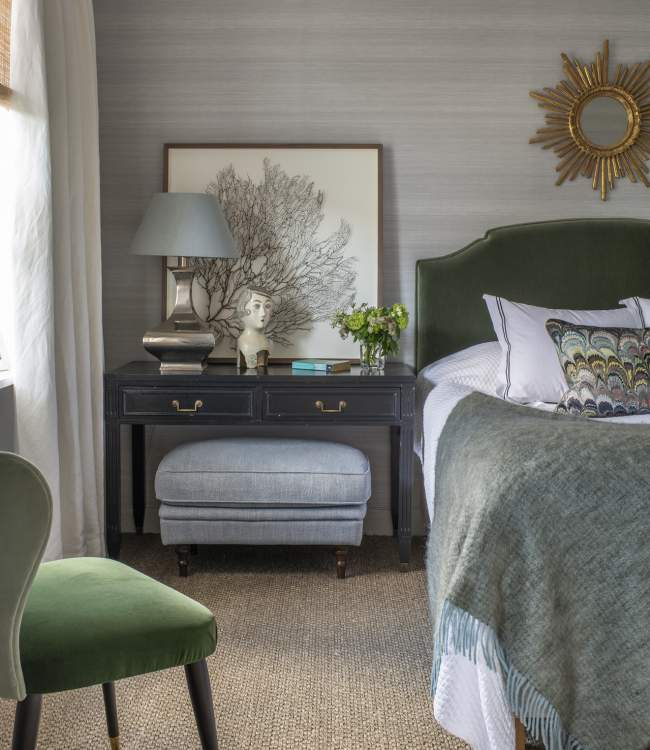

Portfolio Kungsholmen 1930s Apartment

Kungsholmen 1930s Apartment
A 1930´s gem one block away from Norr Mälarstrand on Kungsholmen in Stockholm with the three main rooms facing south giving the whole apartment beautiful light throughout the day.
This small but perfectly planned apartment was completely renovated with a redesigned bathroom and custom detailed kitchen. A neutral backdrop with lots of personality in textiles and other decorative details enhancing the owner's love of mixing patterns and personal finds from travels throughout her life.